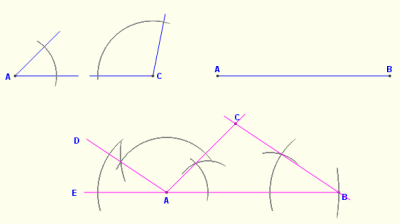
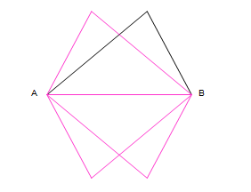

This page shows how to construct a triangle given two angles and a non-included side with compasses and straightedge or ruler.
The construction has four main parts:
The image below is the final drawing above.

The construction involves finding the angle B in the triangle. We know where this angle has to go (on the end of AB at point B), but we must first find it's measure.
This is done by using constructions that add the given angles A and C, then subtracting the result from 180. Because the interior angles of a triangle add to 180, this must be the missing third angle B.
| Argument | Reason | |
|---|---|---|
| 1 | Triangle AB = given AB | Copied using the procedure shown in Copying a line segment. See that page for the proof. |
| 2 | m∠CAB = m∠A | Copied using the procedure shown in Copying an angle. See that page for the proof. |
| 3 | Copied using the procedure shown in Copying an angle. See that page for the proof. | |
| 4 | m∠EAD = |
The three angles at A form a straight angle, so add to 180° |
| 5 | m∠ABC = |
Interior angles of a triangle add to 180° |
| 6 | Therefore m∠ABC = m∠EAD |
From (4) and (5), both equal to the same thing |
| 7 | m∠EAC = |
Exterior angle of a triangle is the sum of the opposite interior angles |
| 8 | Therefore m∠ACB = m∠CAD = given angle C |
From (3) and (7) by the transitive property of equality |
| 9 | The triangle has the given side and two angles | From (2), (8) and (1) |

The above animation is available as a printable step-by-step instruction sheet, which can be used for making handouts or when a computer is not available.